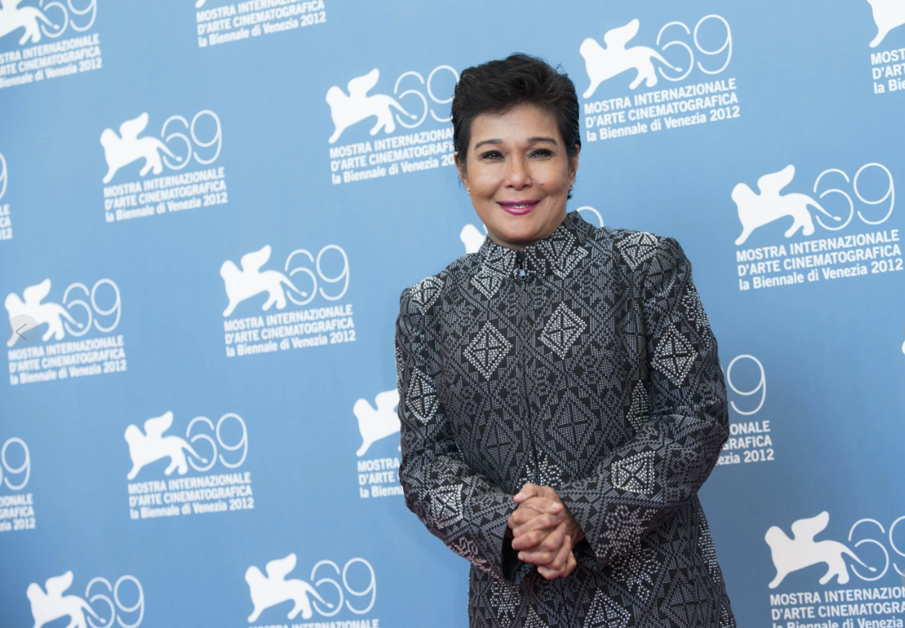

Nora Aunor, an actor among the Philippines' biggest stars, dies at 71

Posted on April 18, 2025
18,324 views
238 comments
Nora Aunor, one of the Philippines' most revered film and television stars, passed away at the age of 71. Known for her powerful acting and influential voice, she defined generations of Filipino cinema with roles that deeply resonated with audiences.
With a career spanning over seven decades, Aunor was known for her performances in landmark films like "Himala" and "Tatlong Taong Walang Diyos." Her legacy continues to inspire the current and future generations of actors and filmmakers.
She leaves behind a legacy of excellence, courage, and authenticity in the Filipino arts. Tributes are pouring in from across the country, celebrating her immense contribution to Philippine culture.